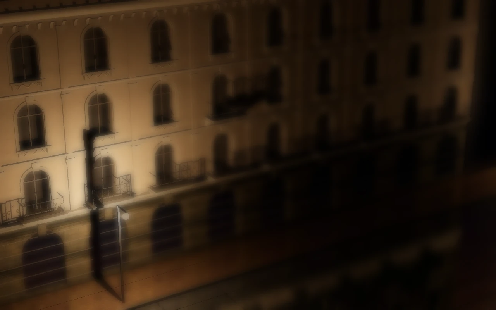
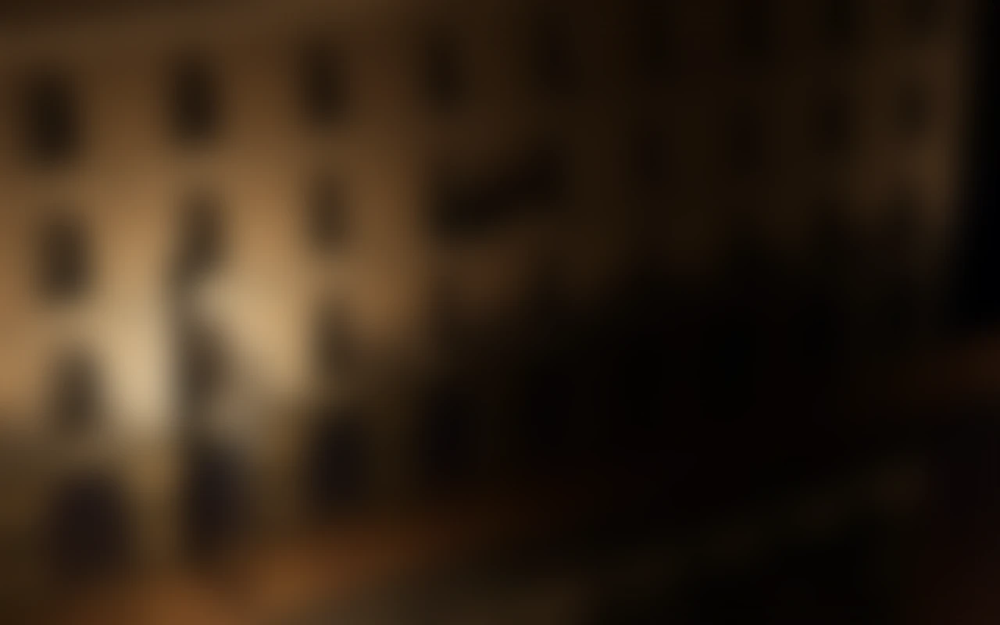
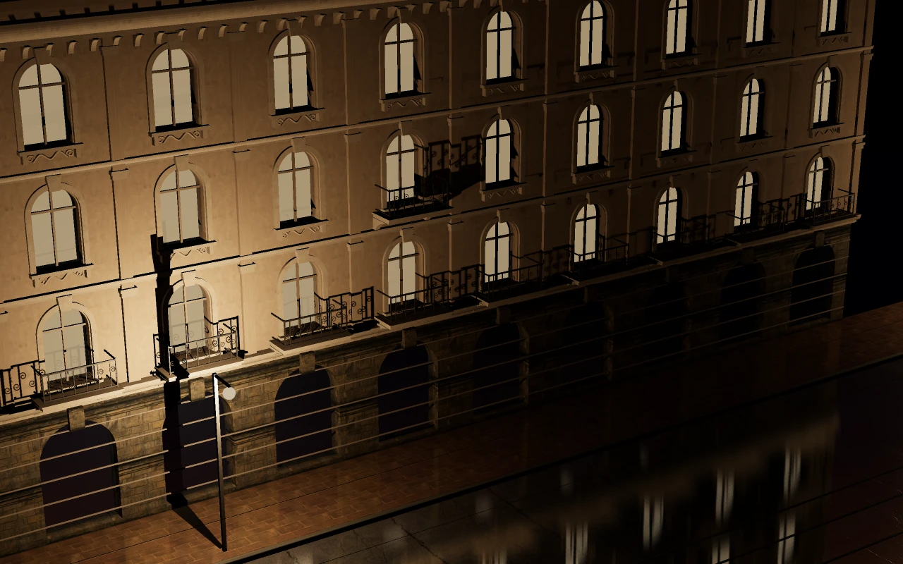
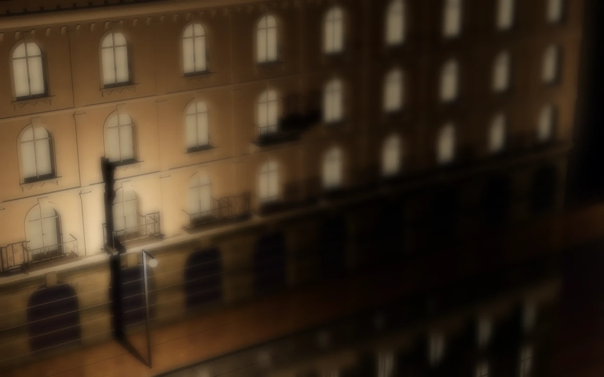
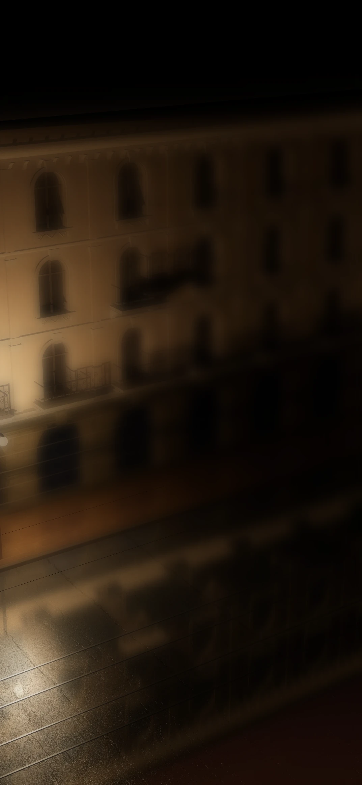
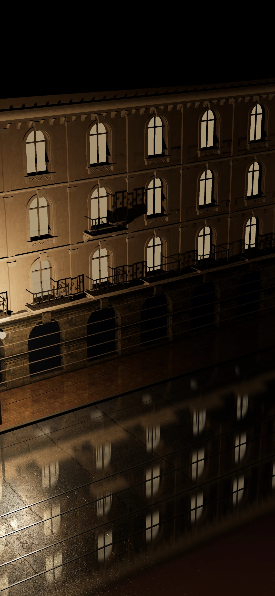

Модель построена кодом (tools/design/rain/bake/model.js): фасад в духе модерна — руст первого этажа с арками витрин, три этажа высоких арочных окон с наличниками и замковыми камнями, пилястры с капителями, тяги между этажами, карниз на кронштейнах, кованые балконы с завитками, лепные вставки под окнами; внизу тротуар, бордюр, мокрый асфальт, трамвайные рельсы и провода, фонарь. Материалы — CC0-текстуры Poly Haven (штукатурка, песчаник, асфальт, плитка). Освещение ночное: фонари подсвечивают штукатурку снизу и отбрасывают тени балконов вверх, тёплое свечение города, горящие комнаты; мокрые отражения на улице. Рендер — three.js r128 (MIT), один раз, с двукратным сглаживанием. В середине кадра — три пролёта на три этажа, модуль повторяется по сторонам. Размытие — тем же способом, что в комнате (глубина каждой точки → своя резкость).
| Время запекания | 4.9 с · 2.6 с · 3.8 с · 4.1 с (ноутбук и телефон, тёмные и горящие окна) |
| Файлы пробы | 1.1 МБ (WebP цвета, PNG глубины) |
| Весь город (оценка) | ≈ 5–6 МБ: на каждую из трёх форм экрана цвет + глубина + атлас горящих окон (Детальная ≈ 1,1 МБ, Стандартная ≈ 0,3 МБ), плюс дальние слои ≈ 1 МБ — в бюджете 15 МБ; запекание всего бульвара ≈ 10–20 минут на ноутбуке |





